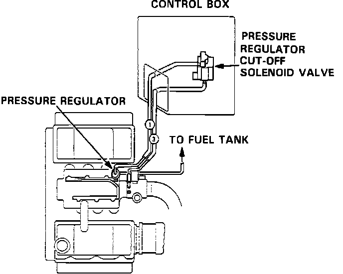

Fuel Pressure Control Solenoid: Description and Operation
Vacuum Lines:

The fuel pressure regulator solenoid is mounted inside the vacuum control box in the engine compartment. The solenoid receives power from the ignition switch whenever it is in the ON position. If coolant temperature exceeds 221 degrees F (105 degrees C) or intake air temperature exceeds 176 degrees F (80 degrees C), the ECU grounds terminal A13 energizing the solenoid which cuts vacuum to the pressure regulator. This increases the fuel pressure to the injectors to prevent vapor lock during hot start conditions.